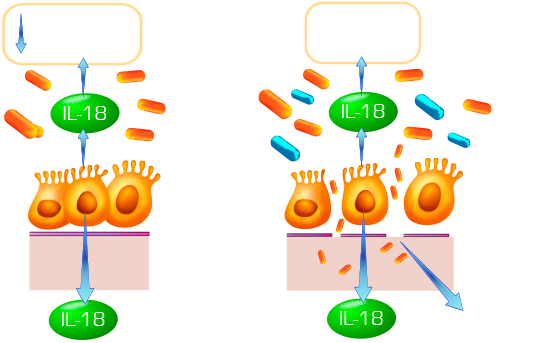
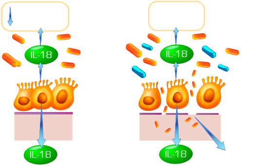

tipos de disbiosis
 

Figura No 02: La microbiota y su impacto en la salud Las bacterias que forman la microbiota intestinal están en un equilibrio en la luz del intestino con los mecanismos de defensa del organismo. Cuando un desbalance (DISBIOSIS) ocurre, estas bacterias patogénicas entran en contacto con estos mecanismos y pueden también invadir la integridad de la mucosa intestinal, generando muchas veces condiciones patológicas ya conocidas.